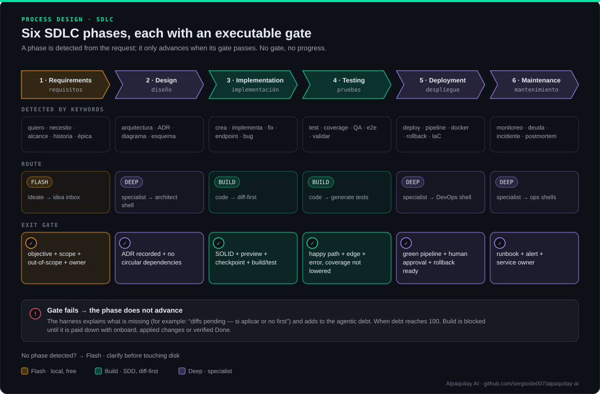

Capítulo 03
Cómo piensa el arnés
Un asistente de IA normal recibe tu texto y responde. Alpaquitay pone delante un arnés: una capa determinista (sin modelo) que percibe el proyecto, decide qué tipo de trabajo es, limita lo que puede pasar y deja constancia. Entenderlo te ayuda a pedir mejor y a saber por qué a veces te pregunta antes de actuar.

Las cinco etapas
- Percibir. Detecta el stack a partir de archivos marcadores (
package.json,pom.xml,go.mod,pyproject.toml…) y las carpetas de código reales. Nunca da por hecho que el código está ensrc/. - Decidir. Clasifica tu petición en un carril y una fase del ciclo de vida, con una confianza y unos motivos visibles.
- Previsualizar. Si hay que escribir, lo prepara como un diff acotado. Nada toca el disco todavía.
- Proteger y verificar. Política de escritura, revisión automática, checkpoint en Git y, después de aplicar, los comandos reales de build y test.
- Dejar evidencia. Decisiones, deuda y economía quedan en
.alpaquitay/.
Los tres carriles
| Carril | Cuándo | Qué hace | Coste |
|---|---|---|---|
| ⚡ Flash | Preguntas cortas, explicaciones, ideas sueltas. | Responde en el chat o guarda la idea en la bandeja. No escribe archivos. | Una llamada, o ninguna. |
| 🔨 Build | Crear, implementar, corregir o refactorizar; hablar de la especificación o el tablero. | Desde el tablero: planifica, genera y deja diffs pendientes que tú apruebas. Desde el chat: al confirmar con si, convierte tu petición en un spec.md nuevo para trabajarla desde el tablero (ver el aviso de abajo). |
2 a 4 llamadas por cambio confirmado. |
| 🧠 Deep | El mensaje habla de despliegue (deploy), pipelines, Docker, Terraform, AWS, Azure, GCP, IaC, DORA, pentest, amenazas (threat), STRIDE, SBOM, OWASP SAMM, FinOps, zero trust, runbooks o MLOps. | Envía la petición a un único especialista registrado (seguridad, DevOps, arquitectura, QA…). | Una llamada al especialista. |
El arnés decide con reglas legibles, no con otro modelo. Algunos ejemplos de lo que dispara cada carril:
| Escribes… | Carril | Por qué |
|---|---|---|
| «¿qué es un ADR?» | Flash · chat | pregunta corta |
| «se me ocurre una idea para el login» | Flash · ideate | idea sin ordenar → bandeja de ideas |
| «añade una épica de pagos a la spec» | Build · spec | menciona spec, épica o tablero |
| «implementa el endpoint de reservas» | Build · code | verbo de código |
| «prepara el pipeline de despliegue en AWS» | Deep · specialist | operaciones o infraestructura |
Cuando la confianza es baja o la ruta es Deep, el arnés propone la ruta y espera: contesta si (o sí, dale, ok, confirmo) para seguir. Cada respuesta muestra una línea legible con el carril, el stack, la fase, la compuerta y la economía de la sesión.
Las seis fases del SDLC y sus compuertas
El arnés también sitúa cada petición en una fase del ciclo de vida. Una fase solo avanza cuando pasa su compuerta de salida.


| Fase | Se activa con palabras como… | Compuerta de salida |
|---|---|---|
| 01 Requisitos | requisito, idea, alcance, historia, objetivo, épica | objetivo + alcance + no-alcance + dueño |
| 02 Diseño | diseño, arquitectura, ADR, diagrama, esquema | ADR registrado + sin dependencias circulares |
| 03 Implementación | crea, genera, implementa, corrige, refactor, endpoint | SOLID + preview + checkpoint + build y test |
| 04 Pruebas | test, prueba, cobertura, QA, e2e | caso feliz + borde + error por cada método público |
| 05 Despliegue | deploy, pipeline, docker, release, rollback, terraform | pipeline verde + aprobación humana + rollback listo |
| 06 Mantenimiento | monitoreo, logs, deuda, upgrade, incidente, postmortem | runbook + alerta + dueño del servicio |
FABLE-5: las cinco reglas de diseño
| Letra | Principio | Cómo lo notas |
|---|---|---|
| F | Fingerprint-first | Detecta tu stack real antes de proponer nada. |
| A | Ask-before-act | Toda escritura y toda ruta arriesgada piden confirmación. |
| B | Bounded preview | Un cambio planifica como mucho 6 archivos; si hacen falta más, hay que partirlo en lotes. |
| L | Legible-first | Cada respuesta dice carril, stack, fase, compuerta y economía. |
| E | Evidence-always | Cada decisión queda en .alpaquitay/decisions.jsonl. |
Qué protege una escritura
Cuando respondes si aplicar, para cada archivo pendiente:
- Política de escritura. Se deniegan siempre los archivos que son secretos:
.env,*.pem,*.key,id_rsa,id_ed25519, carpetassecrets/, archivos de credenciales o de tokens. Escribirspec.mdexige confirmación y copia de seguridad. - Revisión automática (sin modelo). Bloquea si el archivo está fuera de las carpetas de código detectadas o si el contenido parece contener un secreto literal (claves de API, claves privadas, claves de AWS,
sk-…,ghp_…, JWT). Avisa si el archivo supera 400 líneas, si quedanconsole.log,print(,TODOoFIXME, o si el cambio no cambia nada. - Checkpoint en Git. Antes de escribir guarda un stash llamado
alpaquitay/apply-diffs-<fecha>y lo vuelve a aplicar, de modo que tu trabajo sigue en el árbol y además tienes un punto de retorno. Sin Git, continúa sin checkpoint y lo dice. - Escritura y verificación. Escribe los archivos aprobados y ejecuta los comandos reales de build y test detectados por
onboard.
Para volver atrás tras un si aplicar, busca el stash con git stash list (los de Alpaquitay empiezan por alpaquitay/) y recupéralo con git stash apply stash@{N}.
La Definición de Hecho (DoD)
Una tarjeta pasa a Done solo si supera la compuerta DoD:
- no quedan diffs pendientes (primero si aplicar o no);
- en proyectos con código, el contrato de plataforma está verificado por una ejecución explícita de onboard y guardado para el stack actual;
- en proyectos con código, build y tests se ejecutaron de verdad y terminaron en verde. Saber qué comando ejecutar no cuenta como haberlo ejecutado.
Los proyectos sin archivos de código (por ejemplo, solo PDF, Markdown y HTML) omiten las comprobaciones de contrato y calidad; los diffs pendientes siguen bloqueando Done. La compuerta lee el contrato guardado sin crearlo y ejecuta exactamente los comandos build y test de .alpaquitay/platform.json. Si no detecta el stack, confirma ambos comandos con el formato JSON de onboard descrito en Comandos del chat.
La deuda agéntica
Cada decisión arriesgada suma deuda y cada compuerta superada la resta. El medidor va de 0 a 100; al llegar a 100 se bloquea el carril Build hasta que la pagues.
| Evento | Puntos |
|---|---|
| Diff pendiente sin resolver | +2 |
| Postmortem (algo falló) | +10 |
| DoD bloqueado | +15 |
| Despliegue sin plan de rollback | +25 |
| Cualquier otra decisión registrada | +1 |
si aplicar correcto |
−5 |
| Done verificado | −8 |
onboard |
−10 |
Por encima de 70 el arnés te avisa (alta, revisa antes de seguir). Consulta el medidor con deuda en el chat o en la pestaña Evidence.
La economía de la sesión
El arnés cuenta cuántas operaciones resolvió en local, gratis (dora, deuda, postmortem, diff, revisiones, economía) frente a cuántas llamadas a modelos hizo. Escribe economía para verlo. Consejos que te da: preguntas cortas en Flash, onboard una sola vez y diffs en lote.
Dónde mirar si quieres auditar
Todo es texto en tu repositorio. decisions.jsonl tiene una línea JSON por decisión, con su ruta, carril, confianza y motivos; debt.json guarda los últimos 50 eventos de deuda. Puedes leerlos, versionarlos o procesarlos con tus propias herramientas.